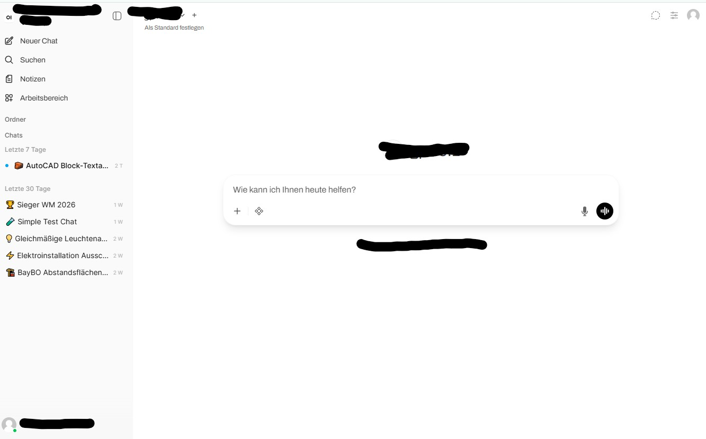

Das Kernangebot
Aus einzelnen Versuchen wird Ihre Firmen-KI.
manibase setzt gemeinsam mit Ihrer Projektgruppe die priorisierten Anwendungsfälle produktiv um. Dazu entstehen die passende Architektur, Regeln und Freigaben, Schulung für alle Nutzer und ein internes Team, das kleinere Anwendungen selbst weiterentwickeln kann.
Jede Umsetzung mit manibase beginnt nach dem Erstgespräch mit einem Klartag.
Eigene KI-Plattform oder Microsoft 365
Die Einführung ist fest. Die Plattform folgt dem Bedarf.
Keine zusätzliche Plattform allein aus Prinzip.
Eigene Kunden-Cloud: Open WebUI, n8n und individuelle KI-Helfer laufen in Ihrer Umgebung. Die dauerhaft gespeicherten Kundendaten liegen dort, eigene Schnittstellen und Erweiterungen sind möglich, Modell- und Datenwege werden projektbezogen dokumentiert.
Microsoft 365: Das Projekt bleibt in der Microsoft-Umgebung. Vorhandene Identitäten und Rechte können genutzt, bestehende Lizenzen und Dienste einbezogen werden.
Einblick in die eigene Plattform
Eine gemeinsame Arbeitsumgebung für freigegebene Anwendungen.

Umsetzung
Die priorisierten Anwendungen gehen gemeinsam in den Betrieb.
Wir definieren, bauen, testen und verbessern die Anwendungsfälle mit Ihrer Projektgruppe. Erweist sich ein Fall im Praxistest als nicht tragfähig, wird er ersetzt.
- 01
Gemeinsam entwickeln
Fachanwender bringen Ablauf, Daten, Ausnahmen und Grenzen ein.
- 02
Prüfen und freigeben
Jede Anwendung erhält Einsatzzweck, Test und fachliche Freigabe.
- 03
Alle Nutzer schulen
Bedienung, erlaubte Nutzung, Prüfung und Grenzen werden vermittelt.
- 04
Dokumentiert übergeben
Betrieb, Verantwortlichkeiten und Konfiguration werden festgehalten.
Ihr Beitrag: aktive Geschäftsführung, interne Koordination, Fachanwender, relevante Daten und Systemzugänge sowie verbindliche Tests und Entscheidungen.
Regeln, Schulung und Übergabe
Das Wissen bleibt nicht bei einem externen Anbieter hängen.
- ✓
Regeln und Freigaben
Nutzungsrichtlinie, Einsatzzwecke, Rollen, Rechte und Freigaben werden im vereinbarten Umfang vorbereitet.
- ✓
Schulung aller Nutzer
manibase schult Bedienung, erlaubte Daten, fachliche Prüfung und Grenzen und stellt eigene Schulungszertifikate aus.
- ✓
Unterstützung bei Compliance und Datenschutz
manibase strukturiert organisatorische und fachliche Bausteine. Die rechtliche Ausgestaltung wird für das konkrete Betriebsmodell bestätigt.
- ✓
Individuelle Software bei Bedarf
Nur wenn Standardplattformen den Ablauf nicht ausreichend abbilden, entsteht eine individuelle Anwendung.
Der Projektpreis entsteht nach dem Klartag.
Scope
Systemlandschaft, Anwendungen, Integrationsaufwand und Schulungsumfang bestimmen den Umfang.
Dauer
Die Einführung dauert so lange, wie Umfang und Systemlandschaft es verlangen. Wir setzen keine feste Laufzeit an, die schnellere Betriebsübergaben künstlich ausbremst.
Anrechnung
Die 3.900 Euro für den Klartag werden bei Beauftragung vollständig angerechnet.
Klären wir, ob eine Einführung jetzt passt.
Etwa 30 Minuten mit der Geschäftsführung. Ihre IT oder Ihr IT-Dienstleister ist willkommen.